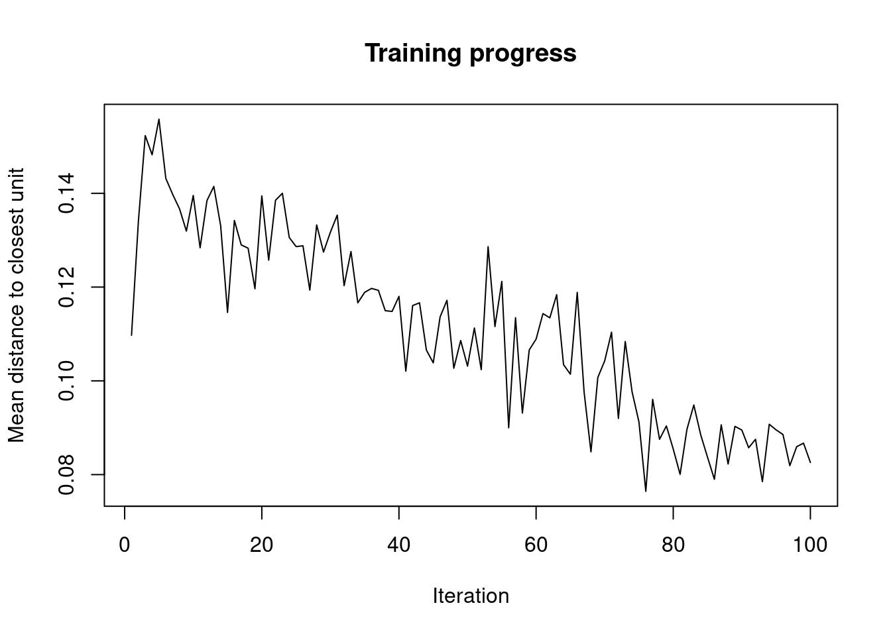
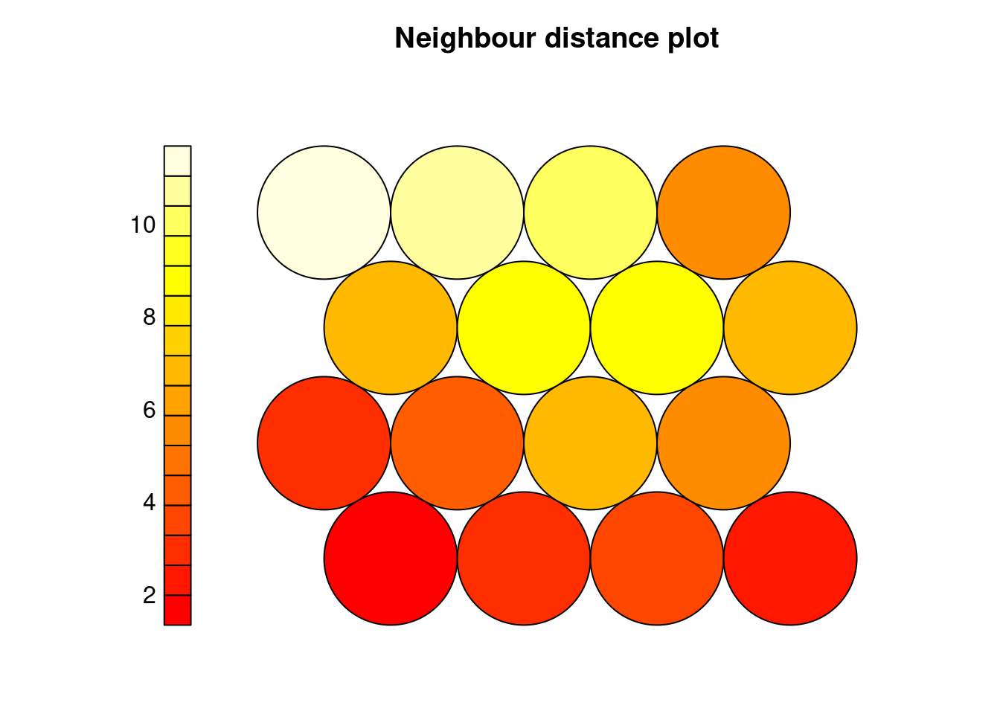

Capítulo 3 Self Organizing Maps
En esta práctica veremos un ejemplo de aplicación de los SOM. Comenzamos leyendo los datos
data.protein = read.csv("data/protein.csv")
rownames(data.protein) = data.protein$Country
data.protein$Country = NULL
data.protein = scale(data.protein)3.1 Librería kohonen
Ahora crearemos el grid SOM. Generalmente especificamos el tamaño del grid antes de entrenar el modelo.
Aquí especificamos la topología de la capa de salida. En este caso, será un grid de 4x4, donde cada neurona tiene 6 vecinos. Si elegimos topo="rectangular" entonces cada neurona tendrá 4 vecinos.
A continuación, entrenamos la red.
El parámetro rlenespecifica el número de épocas (barridos sobre todo el dataset).
Podemos visualizar el proceso de entrenamiento.

Esto nos permite decidir si hay algún parámetro que debemos variar, como rlen, alpha, radius, etc.
som_model = som(data.protein,
grid = som_grid,
rlen = 600,
keep.data = T)
plot(som_model, type = "changes")También podemos ver de forma gráfica el número de veces que cada neurona es activada en el modelo final.
3.1.1 U-Matrix
La U-Matrix (Unified distance matrix o Neighboring distances matrix) es una representación de un SOM, donde las distancias euclídeas entre los pesos de neuronas vecinas son descritas en una imagen en escala de grises.
Veamos cómo construir la U-Matrix
En un SOM los outliers se manifiestan como nodos cuyos pesos están muy alejados de los pesos de sus nodos vecinos. Por tanto, en la U-matrix los nodos outlies son los más claros. Todas las observaciones que activen nodos claros son observaciones que tienen un patrón muy diferente al resto.
Si queremos recuperar las filas que activan nodos más claros, hacemos lo siguiente.

data = merge(data.frame(obs = rownames(data.protein),
nodo = som_model$unit.classif),
data.frame(nodo = 1:length(Umat),
u = Umat))
summary(data$u)## Min. 1st Qu. Median Mean 3rd Qu. Max.
## 2.213 3.087 5.746 5.896 8.853 11.688## nodo obs u
## 1 13 Spain 11.687834
## 2 13 Portugal 11.687834
## 3 14 Greece 10.863085
## 4 15 Albania 9.836145
## 5 15 Bulgaria 9.836145
## 6 11 USSR 8.934703
## 7 10 Italy 8.852920
## 8 7 France 7.106254
## 9 7 Switzerland 7.106254
## 10 12 Hungary 6.780789
## 11 16 Romania 5.829669
## 12 16 Yugoslavia 5.829669
## 13 8 Czechoslovakia 5.746361
## 14 8 Poland 5.746361
## 15 3 W Germany 3.874067
## 16 5 Norway 3.086750
## 17 5 Denmark 3.086750
## 18 5 Finland 3.086750
## 19 5 Sweden 3.086750
## 20 2 Belgium 2.898122
## 21 2 Ireland 2.898122
## 22 2 UK 2.898122
## 23 4 Austria 2.212600
## 24 4 E Germany 2.212600
## 25 4 Netherlands 2.212600Podemos visualizar también las características (pesos) de cada nodo de salida.
3.1.2 Clusters
Una vez que tenemos entrenada la red, cada neurona de la capa de salida tendrá asociados unos pesos, a los que podemos acceder con
Estos pesos pueden ser interpretados como puntos en el espacio de los datos originales, por lo que podemos aplicarle a estos las técnicas de segmentación que ya conocemos (e.g. kmeans o hclust).
En primer lugar, calculamos las distancias entre los nodos del mapa (en el espacio de los datos originales)
A continuación, agrupamos estos nodos usando cluster jerárquico.
Visualizamos para encontrar el número de clusters.